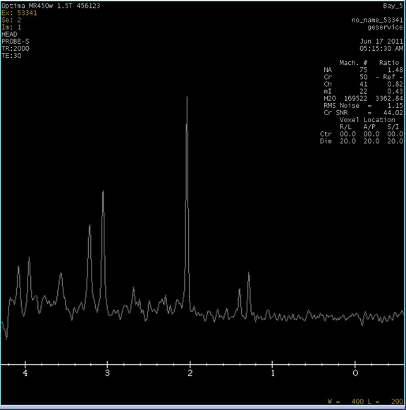

| NOTE: | This test takes about six minutes. |
| NOTE: | Press <Ctrl><C> to stop the tool. |
This is Probe-S Tuning Tool Please landmark patient table as geservice Press ENTER to start the tool or CTRL/C to stop the tool Probe-S Cal Started xshim= -2 yshim= 5 zshim= 2 APS: R1=13 R2=30 TG=187 CF=127762262 deltay_val: 0.253834 Y Axis Calibration completed Successfully deltay_val: 0.523086 X Axis Calibration completed Successfully deltaz_val: 0.174576 Z Axis Calibration completed Successfully
This message appears after the completion of the three axis:
Probe/S Tuning) completed successfully Results are stored in /usr/g/caldir/probes_cal.log Press [Enter] to quit -->
If probe calibration still fails, rerun grafidy, then try probe calibration again.
Illustration 3: Probe/S Report
